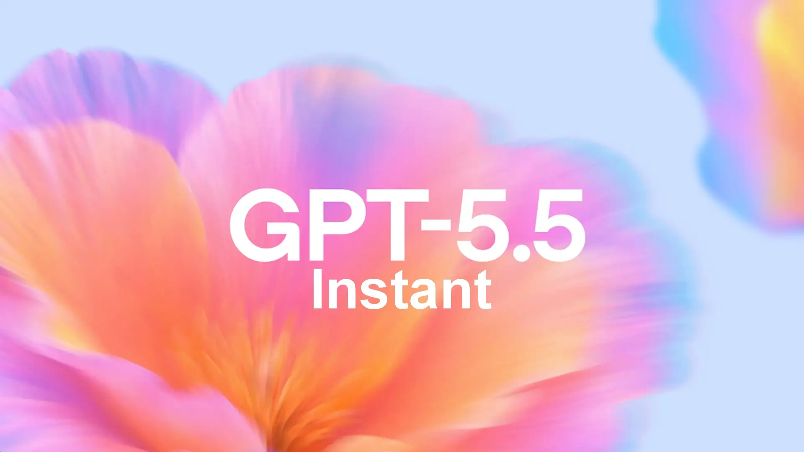
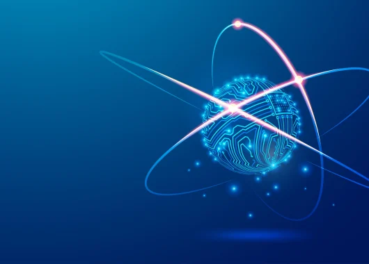
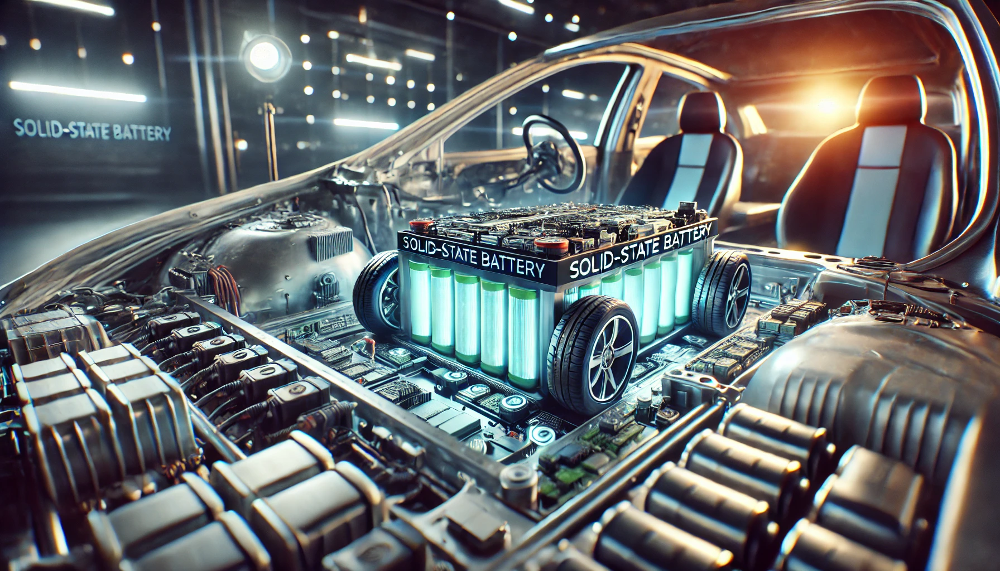
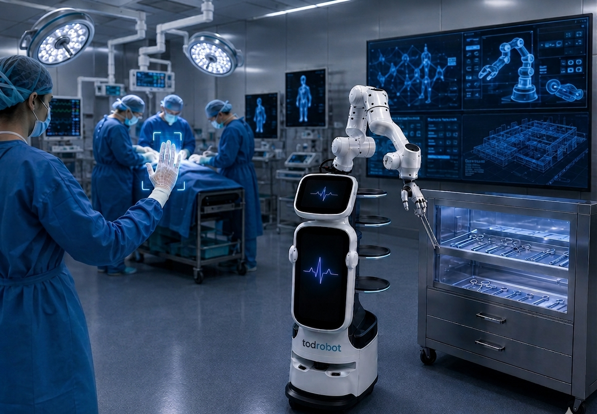

18 Jul 2026
·Por Sofía Ramírez
GPT-5 redefine los límites de la inteligencia artificial generativa
El nuevo modelo de OpenAI supera a sus predecesores en razonamiento complejo, programación y comprensión del lenguaje natural.
Selección editorial / 01

18 Jul 2026
·Por Sofía Ramírez
El nuevo modelo de OpenAI supera a sus predecesores en razonamiento complejo, programación y comprensión del lenguaje natural.

17 Jul 2026
·Por Carlos Mendoza
Nuevos algoritmos post-cuánticos emergen para defender la infraestructura informática global contra ataques sofisticados.

15 Jul 2026
·Por Elena Torres
Vehículos eléctricos con autonomía de más de 1.200 km y cargas ultrarrápidas en menos de diez minutos.

14 Jul 2026
·Por Mateo Ruiz
La nueva generación de robots domésticos promete autonomía total en tareas cotidianas complejas.
12 Jul 2026
·Por Lucía Gomez
Cómo las arquitecturas serverless edge están transformando la velocidad de despliegue global.
10 Jul 2026
·Por David Vega
Pruebas en campo demuestran latencias inferiores al milisegundo y velocidades de transferencia multigigabit.